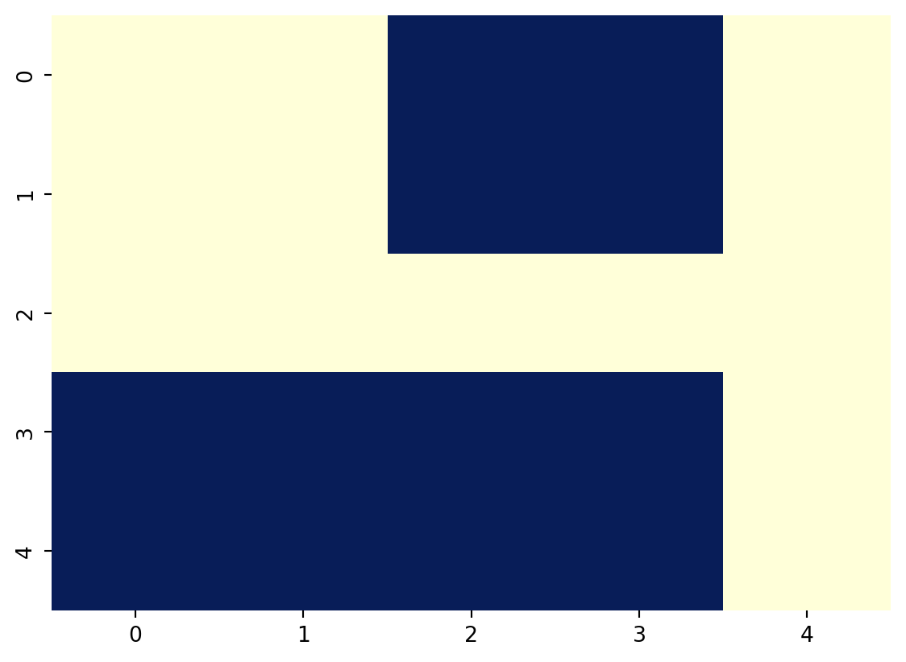
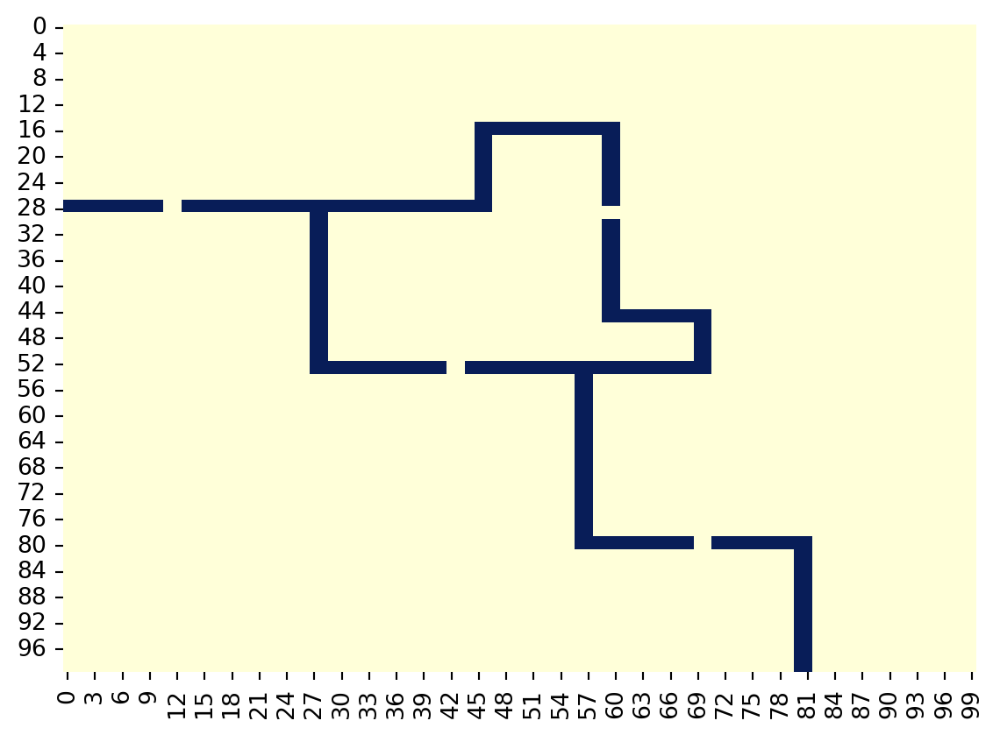

city_map_list = [
[1, 1, 0, 0, 1],
[1, 1, 0, 0, 1],
[1, 1, 1, 1, 1],
[0, 0, 0, 0, 1],
[0, 0, 0, 0, 1]
]6 Задачі


Завдання 6.1
Давайте уявимо, що у нас є місто, 5 на 5 районів, кожен район - це квадрат зі стороною 1. Частина районів являє собою річку - 0, частина землю - 1. Тоді ми могли б зберегти карту такого міста, використовуючи список зі списків:
І ось такий би вигляд мало наше місто:
import numpy as np
import matplotlib.pyplot as plt
import seaborn as sns
sns.heatmap(np.array(city_map_list), cmap='YlGnBu_r', cbar=False)
plt.show()
Як на уроках геометрії, ми могли б розташувати наше місто на координатах x і y. Для запису координат будемо використовувати формат (x, y). Район у верхньому лівому кутку має координати (0, 0) city_map[0][0]. А правий нижній район мав би координати (4, 4) city_map[4][4]. Таким чином кожен район закодований двома індексами, які відповідають його координатам. Наприклад, район (0, 2) це земля city_map[2][0], а район (3, 4) вода city_map[4][3].
Таким чином, щоб отримати значення карти за індексами x і y, потрібно використовувати запис: city_map[y][x]
Сподіваюся, ми розібралися, як можна закодувати карту міста за допомогою списку зі списків, і тепер вирушаймо у справжній мегаполіс 100 на 100. У нашому місті є велика річка з 4-ма мостами. Карта міста також закодована за допомогою списку зі списків. Щоб завантажити карту на ваш комп’ютер, виконайте наступний код:
import pandas as pd
url='https://raw.githubusercontent.com/Aranaur/py4ds/main/00_data/python/city_map.csv'
df = pd.read_csv(url, names=list(range(0, 100, 1)))
city_map_list = df.values.tolist()
sns.heatmap(np.array(city_map_list), cmap='YlGnBu_r', cbar=False)
plt.show()
Тепер у змінній city_map_list список зі списків 100 на 100 - карта міста. Нещодавно в місті запустилася служба доставки, але кур’єри скаржаться, що через складну географію мостів і вулиць важко знайти дорогу. Тому нам потрібно написати програму для навігатора.
Завдання:
У змінних courier_location, orders_location, city_map_list збережені позиції кур’єра, координати доставок і карта міста.
courier_location- кортеж із двох цілих чисел. Координати стартового місця розташування кур’єра у форматі(x, y). Деxіy- це цілі числа від 0 до 99.
Приклад: courier_location = (10, 10)
orders_location- список щонайменше з одного кортежу з координатами. Координати, за якими кур’єр має доставити замовлення. У списку зберігається довільне число кортежів з координатами точок призначення, які повинен відвідати кур’єр.
Приклад: orders_location = [(1, 1), (92, 13), (46, 33)]
city_map_list- список зі списків 100 на 100, карта міста, яку ми завантажили вище.
Вам відомо місце розташування кур’єра, набір координат місць призначення і карта міста. Тепер потрібно написати скрипт, який створить змінну route і збереже в неї маршрут, за яким має пройти кур’єр, щоб рознести всі доставки. Під час формування маршруту необхідно виконати такі умови:
- Маршрут має проходити тільки по землі, по воді ходити не можна.
- Кур’єри можуть переміщатися на один крок із поточного району вправо, вліво, вниз або вгору.
- Маршрут має бути збережений у список, де кожен елемент - це кортеж з координатами кожного кроку кур’єра.
- Кур’єр проходить один крок за 10 хвилин і може доставляти замовлення в будь-якому порядку.
Приклад роботи навігатора на нашому місті 5 на 5:
```{python}
city_map_list = [
[1, 1, 0, 0, 1],
[1, 1, 0, 0, 1],
[1, 1, 1, 1, 1],
[0, 0, 0, 0, 1],
[0, 0, 0, 0, 1]
]
courier_location = (2, 2) # стартова позиція кур'єра
orders_location = [(4, 0), (0, 2), (4, 3)] # координати для доставки трьох товарів
route = [
(3, 2),
(4, 2),
(4, 1),
(4, 0), # адреса доставки
(4, 1),
(4, 2),
(3, 2),
(2, 2),
(1, 2),
(0, 2), # адреса доставки
(1, 2),
(2, 2),
(3, 2),
(4, 2),
(4, 3) # адреса доставки
]
```Рішення
# Імпортуємо чергу
from collections import deque
# Функція для пошуку маршруту
def find_path(city_map, start, end):
# Створюємо масив відвіданих позицій
visited = [[False for _ in range(len(city_map[0]))] for _ in range(len(city_map))]
# Створюємо чергу, яка містить поточну позицію та маршрут
queue = deque([(start, [])])
# Поки черга не пуста - шукаємо маршрут
while queue:
# Беремо перший елемент з черги
current, path = queue.popleft()
# Розпаковуємо координати поточної позиції
x, y = current
# Якщо поточна позиція - ціль, то повертаємо маршрут
if current == end:
# Додаємо останню позицію до маршруту
return path + [end]
# Якщо поточна позиція не належить межам міста, або її вже відвідали, то пропускаємо
if x < 0 or x >= len(city_map[0]) or y < 0 or y >= len(city_map) or city_map[y][x] == 0 or visited[y][x]:
continue
# Позначаємо поточну позицію як відвідану
visited[y][x] = True
# Додаємо можливі наступні позиції до черги
queue.append(((x + 1, y), path + [current]))
queue.append(((x - 1, y), path + [current]))
queue.append(((x, y + 1), path + [current]))
queue.append(((x, y - 1), path + [current]))
# Якщо маршрут не знайдено, повертаємо None
return None
# Вхідні дані
route = []
# Початкова позиція кур'єра
courier_location = (10, 87)
# Координати замовлень
orders_location = [(83, 38), (94, 56), (72, 75), (74, 64), (62, 15), (83, 99), (84, 25), (66, 7), (71, 41), (2, 40)]
# Перебираємо всі замовлення та шукаємо маршрут до кожної з них
for order in orders_location:
# Знаходимо маршрут до наступної доставки
path = find_path(city_map_list, courier_location, order)
# Якщо маршрут не знайдено, виводимо повідомлення та завершуємо роботу
if path is None:
print("Route not found")
break
# Додаємо маршрут до списку маршрутів
route.extend(path)
# Поточна позиція - остання позиція маршруту
current_position = order
#
route.append(order)